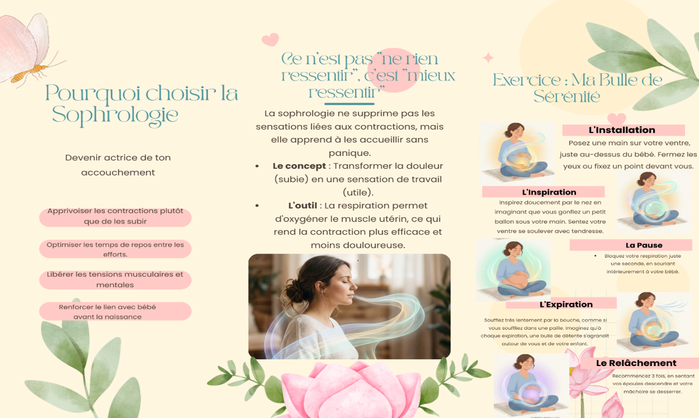

Bienvenue, Future Maman 💗
Votre compagnon de grossesse — du premier trimestre jusqu'à l'accouchement
Ce guide complet a été conçu par une équipe de professionnelles de santé tunisiennes pour vous accompagner à chaque étape de votre grossesse.
🌸 Messages Essentiels
Ton corps est fait pour accoucher
L'accouchement est un processus naturel. Le corps produit des hormones qui aident les contractions et diminuent la douleur. Fais confiance à ton corps.
La douleur a un rôle
La douleur pendant le travail est normale. Chaque contraction aide le col à s'ouvrir et le bébé à descendre. Cela permet à la maman de se reposer entre les contractions.
La respiration aide beaucoup
Respirer calmement et profondément diminue le stress, aide à supporter la douleur et améliore l'oxygène pour la maman et le bébé.
Rester calme aide le travail
Le stress peut ralentir les contractions. Un environnement calme et rassurant aide le corps à mieux travailler. Se sentir soutenue est très important.
Chaque accouchement est différent
Chaque femme est unique. Chaque bébé est différent. L'important est d'être informée, soutenue et confiante.
Femme bien informée
Une femme bien informée a moins peur, se sent plus forte et vit une expérience plus positive.
🌱 Votre corps pendant la grossesse
Pendant la grossesse, votre corps vit une transformation physiologique exceptionnelle.
- 🔸 1er trimestre : Fatigue intense, nausées, adaptation hormonale
- 🔸 2e trimestre : Retour d'énergie, croissance du ventre, premiers mouvements
- 🔸 3e trimestre : Préparation à l'accouchement, gestion du poids et de la posture
- 🔸 En continu : Hydrater, se reposer, consulter votre équipe soignante régulièrement
🥗 Nutrition & Bien-être
Une alimentation équilibrée est le pilier d'une grossesse saine.
- 🥦 Légumes verts, légumineuses et fruits frais chaque jour
- 🐟 Poissons gras (sardines, saumon) 2 fois par semaine
- 🥛 Produits laitiers pour le calcium
- 💊 Suppléments de fer et acide folique sur prescription
- 💧 Au moins 1,5 à 2 litres d'eau par jour
💆♀️ Santé mentale & Soutien émotionnel
Votre bien-être émotionnel est tout aussi important que votre santé physique.
- 💬 Parlez de vos émotions à votre entourage ou à un professionnel
- 🧘 Pratiquez la méditation et la relaxation guidée
- 📖 Tenez un journal de grossesse pour exprimer vos ressentis
- 🤝 Rejoignez des groupes de soutien pour futures mamans
- 🌙 Accordez-vous des moments de repos et de plaisir chaque jour
👶 C'est quoi un accouchement physiologique ?
Un accouchement physiologique est un accouchement qui se déroule naturellement, sans intervention médicale systématique (pas de déclenchement artificiel, pas de péridurale obligatoire, pas d'épisiotomie systématique…), sauf si une complication apparaît. Le corps de la femme est capable d'accoucher naturellement grâce aux contractions utérines efficaces, à la descente progressive du bébé et aux hormones naturelles (ocytocine, endorphines). C'est un processus progressif, instinctif et respecté.
🌊 Comment décrire le processus ?
L'accouchement physiologique se déroule en 4 phases distinctes, chacune avec ses caractéristiques propres.
- 1) Phase de latence : Contractions irrégulières, dilatation lente (0–3 cm). La femme peut encore parler, marcher.
- 2) Phase active du travail : Contractions régulières, plus intenses. Dilatation 4–10 cm. Descente du bébé.
- 3) Expulsion : Envie de pousser, sortie du bébé.
- 4) Délivrance : Expulsion du placenta.
🤝 Rôle du soutien pendant l'accouchement
Avoir une personne de confiance à vos côtés peut transformer votre expérience d'accouchement.
- ✓ Offrir un soutien émotionnel et physique constant
- ✓ Vous rappeler vos techniques de respiration
- ✓ Vous aider à trouver les positions les plus confortables
- ✓ Vous hydrater et vous encourager
- ✓ Communiquer avec l'équipe médicale en votre nom
🌷 Bienvenue dans ton espace respiration
Prends un instant pour toi…
La respiration est ton alliée tout au long de la grossesse et le jour de la naissance.
Elle t’aide à te détendre, à apaiser ton esprit et à accompagner ton corps avec
confiance et sérénité.
À chaque souffle, tu offres à ton bébé calme, oxygène et sécurité. C’est un langage
silencieux entre vous, un lien invisible mais profondément puissant.
Ici, tu apprendras à respirer en conscience, à relâcher les tensions et à faire
confiance à ton souffle comme à une boussole intérieure.
Respire… ton corps sait faire.
Inspire la sérénité, expire les doutes… 🤍
Respiration pendant la grossesse : votre alliée bien-être
Vous pouvez pratiquer ces techniques facilement à la maison, à tout moment de la journée.
- 1. La respiration abdominale (respiration du ventre)
Comment la pratiquer
1. Installez-vous dans une position confortable, assise ou allongée sur le côté.
2. Posez une main sur votre ventre.
3. Inspirez lentement par le nez en laissant votre ventre se gonfler.
4. Expirez doucement par la bouche en laissant votre ventre se relâcher.
5. Répétez pendant quelques minutes en restant détendue.
Binefaits
✔ améliore l’oxygénation pour vous et votre bébé
✔ favorise la relaxation
✔ diminue le stress et les tensions
- 2. La respiration lente et profonde
Comment la pratiquer
1. Inspirez lentement et calmement par le nez.
2. Expirez doucement par la bouche.
3. Essayez de garder un rythme calme et régulier.
4. Continuez pendant plusieurs minutes.
Binefaits
✔ apaise le corps et l’esprit
✔ améliore la circulation sanguine
✔ favoriser un meilleur sommeil . - 3. La respiration de cohérence cardiaque
Comment la pratiquer
1. Asseyez-vous confortablement, le dos droit.
2. Inspirez par le nez pendant 5 secondes.
3. Expirez lentement par la bouche pendant 5 secondes.
4. Continuez ce rythme pendant environ 5 minutes.
Binefaits
✔ réduit le stress et l’anxiété
✔ favorise l’équilibre émotionnel
✔ améliore la détente générale
🌸 Respiration pendant la phase active du travail
Pendant le travail, votre col se dilate et les contractions deviennent plus intenses. La respiration devient votre outil principal pour gérer la douleur.
- 🔵 Phase latente (0–4 cm) :
Comment la pratiquer
• Inspirez profondément et calmement par le nez.
• Expirez doucement par la bouche.
• Gardez un rythme régulier et détendu.
• Concentrez-vous sur votre souffle pendant la contraction.
Binefaits
✔ Apaise le corps et l’esprit
✔ Réduit la tension musculaire
✔ Prépare le corps aux contractions suivantes - 🟡 Respiration Lamaze (4–10 cm) :
Comment la pratiquer
• Inspirez doucement par le nez.
• Expirez par la bouche en un souffle long et contrôlé.
• Vous pouvez adapter le rythme au rythme de la contraction (ex. inspiration plus courte, expiration plus longue).
• Pratiquez en visualisant votre corps détendu et la contraction qui s’évacue.
Binefaits
✔ Diminue la perception de la douleur
✔ Favorise la relaxation et la concentration
✔ Aide à mieux gérer les contractions - 🟢 Panting léger :
Comment la pratiquer
• Laissez votre corps respirer au rythme naturel.
• Ne forcez pas, inspirez et expirez selon votre besoin.
• Concentrez-vous sur votre souffle et vos sensations.
Binefaits
✔ Réduit le stress et l’anxiété
✔ Favorise la détente et le relâchement musculaire
✔ Prépare le corps à la phase d’expulsion
LA RESPIRATION PENDANT L’EXPULSION
- 1. La respiration instinctive (poussée spontanée) :
Comment fait
1. La respiration instinctive (poussée spontanée) :
1. Choisissez une position confortable : assise, semi-assise, accroupie ou sur le côté.
2. Respirez normalement, sans forcer.
3. Poussez seulement lorsque vous en ressentez l’envie, en laissant votre corps guider la poussée.
4. Ne retenez jamais votre souffle trop longtemps.
5. Suivez les conseils de votre sage-femme si nécessaire.
Binefaits
✔ Réduit la fatigue pendant l’accouchement.
✔ Diminue le risque de déchirures du périnée.
✔ Favorise un accouchement plus naturel et physiologique.
✔ Apaise le stress et l’anxiété - 2. La poussée expiratoire et profonde:
Comment fait
1. Installez-vous confortablement (coussin, ballon ou chaise).
2. Inspirez profondément par le nez, gonflez le ventre puis la poitrine.
3. Expirez lentement et doucement par la bouche, comme si vous souffliez dans une paille ou faisiez un son « F » ou « S »
4. Répétez 5 à 10 fois, en restant détendue.
Quand l’utiliser
• Cette méthode peut être guidée par la sage-femme si elle estime nécessaire d’aider la poussée.
• Important : la poussée spontanée reste la méthode de référence selon l’OMS.
Binefaits :
✔ Aide le bébé à descendre plus facilement.
✔ Réduit la fatigue pendant la poussée.
✔ Protège le périnée et limite les déchirures.
✔ Apaise le stress et l’anxiété
✔ Améliore l’oxygénation
- 3️ Expiration lente et contrôlée pendant la poussée
Comment faire
• Inspirez profondément par le nez.
• Expirez lentement par la bouche pendant la poussée.
• Gardez une expiration longue, douce et contrôlée.
• Évitez de bloquer votre respiration.
Binefaits
✔ Protège le périnée
✔ Permet une poussée progressive et contrôlée
✔ Diminue les tensions et la fatigue
💡Conseils pour intégrer ces respirations dans votre quotidien
-
• Créez un rituel : le matin au réveil, à la pause déjeuner, ou le soir avant de
dormir.
• Choisissez un endroit calme, propice à la détente.
• Utilisez un coussin ou un ballon pour vous asseoir confortablement.
• Ne forcez jamais. La respiration doit rester fluide, agréable et sans contrainte.
• Adaptez selon votre ressenti : certaines respirations peuvent être plus confortables que d’autres selon le trimestre ou votre état émotionnel.
• Si vous le souhaitez, vous pouvez accompagner votre respiration d’une musique douce ou d’une lumière tamisée pour favoriser la détente.
🤱 Chère future maman
Ton corps vit une transformation extraordinaire. Avec la croissance de ton ventre, ta posture change et certaines tensions peuvent apparaître au niveau du dos, du bassin ou des jambes.
Ces
inconforts sont fréquents pendant la grossesse. Grâce à des postures douces et adaptées,
tu peux soulager ces douleurs, te détendre et préparer ton corps à l’accouchement.
Voici quelques postures simples et efficaces à pratiquer pendant la grossesse.
🌿 Décubitus Latéral Gauche (DLG)
Position allongée sur le côté gauche, avec des coussins pour soutenir le corps.

- ✔️ Améliore la circulation utéro-placentaire
- ✔️ Favorise l'oxygénation du fœtus
- ✔️ Diminue les œdèmes des membres inférieurs
- ✔️ Soulage les lombalgies
- ✔️ Favorise la relaxation
🔹 Comment s’installer ?
-S'allonger sur le côté gauche
-
coussin sous la tête, entre les genoux, et sous le ventre si nécessaire.
🌸 Position accroupie
Fléchir les genoux en descendant le bassin vers le sol, tout en gardant le dos droit.

- ✔️ Renforce les muscles des jambes
- ✔️ Assouplit le périnée
- ✔️ Augmente la mobilité du bassin
- ✔️ Améliore la circulation
- ✔️ Prépare le bassin à l'accouchement
🔹 Comment s’installer ?
- Écartez les pieds
- descendez
doucement en pliant les genoux
- aidez-vous d'un support (chaise, mur ou
partenaire)
- remontez lentement.
🌿 Position à quatre pattes
Appui sur les mains et les genoux, le dos droit et le regard vers le sol.

- ✔️ Soulage les lombalgies
- ✔️ Diminue la pression sur le bassin
- ✔️ Améliore la mobilité pelvienne
- ✔️ Favorise la bonne position du bébé
- ✔️ Réduit les douleurs sciatiques
🔹 Comment s’installer ?
- À genoux sur un tapis
- mains
sous les épaules
- genoux sous les hanches
- gardez le dos neutre
- respirez calmement.
🌸 Posture de suspension
Debout en se penchant légèrement vers l'avant, en se tenant à un support (mur, chaise, partenaire ou écharpe type rebozo).

- ✔️ Soulage les lombalgies
- ✔️ Diminue la pression sur le bassin
- ✔️ Détend le périnée
- ✔️ Favorise la mobilité pelvienne
- ✔️ Apporte une sensation de légèreté
🔹 Comment s’installer ?
- Pieds écartés à largeur du bassin
- penchez-vous doucement
- accrochez-vous à un support solide
-
relâchez les épaules et respirez profondément.
✨ Préparation du Périnée
L'objectif de cette préparation n'est pas de remplacer un suivi médical, mais de vous aider à mieux comprendre votre corps pour accompagner la naissance de manière éclairée. Le périnée est un ensemble de muscles situés entre la symphyse pubienne et le coccyx. Il soutient la vessie, l'utérus et le rectum. Un périnée souple et conscient réduit le risque de déchirure et améliore l'expulsion.
🌿 PRÉPARATION DU PÉRINÉE
Le périnée est un ensemble de muscles et de tissus fibreux situés entre la symphyse pubienne et le coccyx. Il soutient les organes pelviens : vessie, utérus et rectum.
- 1)C’est quoi le périnée ? Le périnée est un
ensemble de muscles et de tissus fibreux situés entre la symphyse pubienne et le
coccyx.
Il soutient les organes pelviens : vessie, utérus et rectum.
Pendant l’accouchement, il doit :
• Se relâcher
• S’étirer progressivement
• Permettre le passage de la tête fœtale
=>Un périnée souple et conscient réduit le risque de déchirure et améliore l’expulsion - 2)Objectifs de la préparation périnéale : Apprendre à identifier et ressentir son périnée. Apprendre le relâchement volontaire — savoir détendre le plancher pelvien au moment de la poussée. Coordination respiratoire avec les contractions.
- 3) Préservation de la santé à long terme :1.
Prévention des traumatismes physiques
L'objectif central est d'assouplir les tissus pour qu'ils s'étirent plus facilement
lors du passage du bébé.
• Réduction des déchirures : Un périnée préparé (par massage ou exercices) réduit le
risque de déchirures périnéales graves lors de l'expulsion.
• Limitation des épisiotomies : En améliorant l'élasticité, la préparation peut diminuer le recours à l'épisiotomie.
• Cicatrisation facilitée : En cas de lésion, un muscle bien vascularisé et entretenu cicatrise souvent mieux et plus rapidement.
2. Maîtrise fonctionnelle et sensorielle
Il s'agit d'apprendre à contrôler cette zone souvent méconnue.
• Prise de conscience : Apprendre à identifier et à ressentir son périnée pour mieux le préserver.
• Apprentissage du relâchement : Savoir détendre volontairement le plancher pelvien au moment de la poussée pour opposer moins de résistance.
• Coordination respiratoire : Lier les contractions et les relâchements à la respiration pour optimiser les efforts de poussée.
3. Préservation de la santé à long terme
La préparation anticipe les désagréments fréquents du post-partum.
• Prévention de l'incontinence : Tonifier le muscle aide à prévenir les fuites urinaires pendant et après la grossesse.
• Soutien des organes : Renforcer le "hamac" musculaire pour éviter les prolapsus (descentes d'organes) à l'avenir.
• Récupération post-natale : Commencer les exercices dès la grossesse peut réduire le nombre de séances de rééducation nécessaires après la naissance.
🌸Méthodes validées :
I)Éducation au relâchement périnéal : Beaucoup de femmes savent contracter (exercices de Kegel) mais l’accouchement nécessite surtout un relâchement contrôlé. L'éducation au relâchement périnéal est une étape clé pour faciliter l'accouchement et prévenir les douleurs chroniques ou les dysfonctions sexuelles. Contrairement au renforcement, elle apprend à "lâcher prise" musculairement.
- 1. Pourquoi apprendre à relâcher ? • Pendant
l'accouchement : Un périnée capable de se détendre oppose moins de résistance à la
tête du bébé, réduisant ainsi les risques de déchirures et de recours à
l'épisiotomie.
• En cas d'hypertonie : Certaines femmes ont un périnée "trop tendu" (contracté en permanence sans le savoir), ce qui peut causer des douleurs lors des rapports ou des difficultés à vider la vessie. - 2. Techniques de relâchement• La Respiration
Diaphragmatique : (C’est l’outil n°1). À l’inspiration, le diaphragme descend,
poussant doucement les organes et le périnée vers le bas, ce qui l'étire et le
relâche naturellement.
• La Conscience Corporelle : Apprendre à différencier la contraction du relâchement total. On peut s'aider de l'image du bassin qui "s'élargit" à l'expiration.
• Postures de détente :
• Le Yogi Squat (Malasana) : Accroupie, les talons au sol, pour ouvrir le bassin.
• La posture de l'enfant : À genoux, buste vers l'avant, pour étirer la zone postérieure du périnée.
• Le papillon allongé : Sur le dos, plantes de pieds jointes, genoux tombant sur les côtés.
- 3. Le rôle des professionnelsUne sage-femme ou un kinésithérapeute spécialisé peut utiliser le biofeedback (visuel sur écran) pour vous montrer quand votre muscle est réellement au repos, ou pratiquer des techniques manuelles pour libérer les tensions tissulaires.
- Conseil :Pratiquez la respiration abdominale 2 à 5 minutes par jour, idéalement dans un endroit calme, pour intégrer ce réflexe de détente.
Massage périnéal (à partir de 34 SA)
Pourquoi masser à partir de 34 SA ?
• Assouplissement ciblé : Les tissus deviennent plus élastiques, facilitant le passage
de la tête du bébé.
• Réduction des traumatismes : Une pratique régulière (3 à 4 fois par semaine) réduit
statistiquement le risque de déchirures graves et le recours à l'épisiotomie.
• Désensibilisation : Le massage aide à s'habituer à la sensation de forte pression et
d'étirement, ce qui permet de mieux gérer la phase d'expulsion.
- Guide de pratique :
• Préparation : Lavez-vous soigneusement les mains et installez-vous confortablement (allongée avec des coussins ou un pied sur un tabouret).
• Produit adapté : Utilisez une huile végétale neutre (amande douce, olive bio) ou une huile spécifique comme l'huile de massage du périnée Weleda.
• Technique interne :
o Insérez le pouce (ou l'index) sur 2-3 cm à l'entrée du vagin.
o Exercez une pression ferme vers le bas (vers l'anus) et effectuez des mouvements de balancier en forme de "U" (de 3h à 9h) pendant 5 à 10 minutes.
• Technique externe : Massez doucement la zone entre le vagin et l'anus (le noyau fibreux) avec des petits cercles pour assouplir la peau.
Conseil : Si le geste vous semble difficile, n'hésitez pas à demander une démonstration lors d'une séance avec votre sage-femme.
- Contre-indications :
o Infection vaginale(mycoses, herpès)
o Menace d’accouchement prématuré
o Placenta prævia
- Effet démontré : -Diminution des épisiotomies chez les primipares.
Facteurs influençant l’intégrité périnéale
- 1. Facteurs Maternels :
• Qualité des tissus : L'âge, le type de peau et la génétique influencent l'élasticité naturelle des fibres de collagène.
• Parité : Les risques de lésions sont statistiquement plus élevés lors d'un premier accouchement (primiparité) Ameli.fr.
• Hygiène de vie : Le tabagisme dégrade l'élasticité cutanée, tandis qu'une bonne hydratation et une alimentation riche en vitamine C favorisent la souplesse tissulaire.
- 2. Facteurs Fœtaux :
• Poids et périmètre crânien : Un bébé de plus de 4 kg (macrosomie) ou une tête plus large que la moyenne augmentent la tension sur les tissus.
• Position du bébé : Une présentation par le siège ou une position "face vers le haut" (variété postérieure) demande un espace de passage plus important.
- 3. Facteurs Obstétricaux (Déroulement du travail)
:
• Type de poussée : La poussée en expiration freinée (le "souffle") est beaucoup plus protectrice que la poussée en apnée (méthode Valsalva).
• Vitesse d'expulsion : Une sortie trop rapide ne laisse pas le temps aux tissus de se distendre progressivement. À l'inverse, une phase d'expulsion très longue peut fatiguer le muscle.
• Interventions médicales : L'utilisation d'instruments (ventouse, forceps) ou le recours à l'épisiotomie impactent directement l'intégrité périnéale.
• Position d'accouchement : Les positions physiologiques (sur le côté, à quatre pattes) ouvrent mieux le bassin que la position classique sur le dos.
- Conseil : Discuter de votre projet de naissance avec votre sage-femme ou gynécologue permet d'aborder ces facteurs, notamment le choix des positions de poussée.
ALTERNATIVES DE PRÉPARATION
- *Yoga prénatal :
• Objectif : Libérer les tensions du bassin et du sacrum pour que le périnée ne soit pas "coincé" entre des os rigides.
• Bénéfice périnéal : Les postures (comme le chat-vache ou le squat) apprennent à étirer les muscles profonds.
Important :
Doit être adapté à la grossesse. - *Chant prénatal :
• Objectif : Utiliser les sons graves pour faire vibrer le bas du corps.
• Bénéfice périnéal : Lors des sons bas, le diaphragme descend et provoque un micro-massage du plancher pelvien, favorisant son relâchement profond.
• Action : Apprendre à "chanter" la douleur plutôt que de se crisper. Trouvez des ateliers via l'association Chant Prénatal Musique et Santé
Base neurophysiologique :
• Les sons graves stimulent la détente laryngée
• Il existe une corrélation neuromusculaire entre mâchoire, diaphragme et périnée
• Vocaliser pendant les contractions favorise le relâchement - *Sophrologie :
La peur de la douleur provoque souvent une contraction réflexe du périnée (le "verrouillage"). • Objectif : Par la visualisation, on imagine le périnée comme une fleur qui s'ouvre ou un muscle souple comme une éponge.
o Réduction du cortisol
o Meilleure gestion de la douleur
o Diminution de l’anxiété prénatale
• Bénéfice périnéal : Apprendre à maintenir la zone détendue même sous la pression de la tête du bébé.

Le Yoga prépare la structure (os/muscles).
Le Chant prépare l'ouverture (vibration/souffle).
La Sophrologie
💗 Octobre Rose
Sensibilisation au dépistage du cancer du sein — parce que chaque femme mérite d'être protégée.